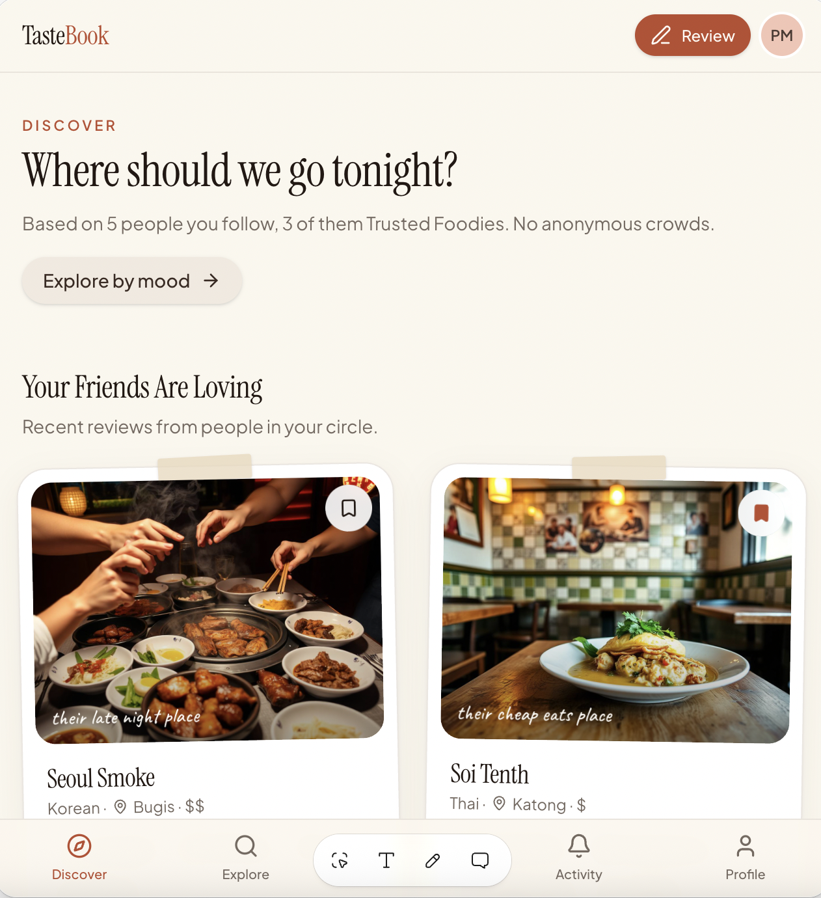
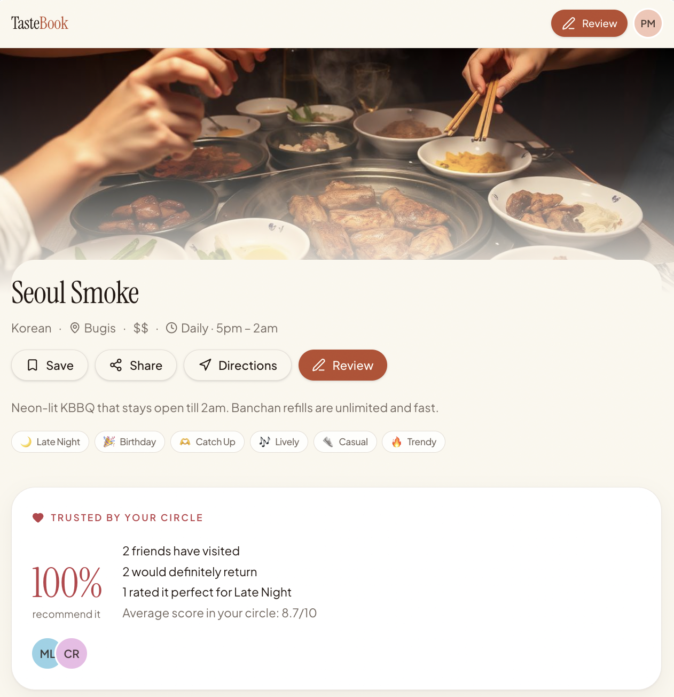
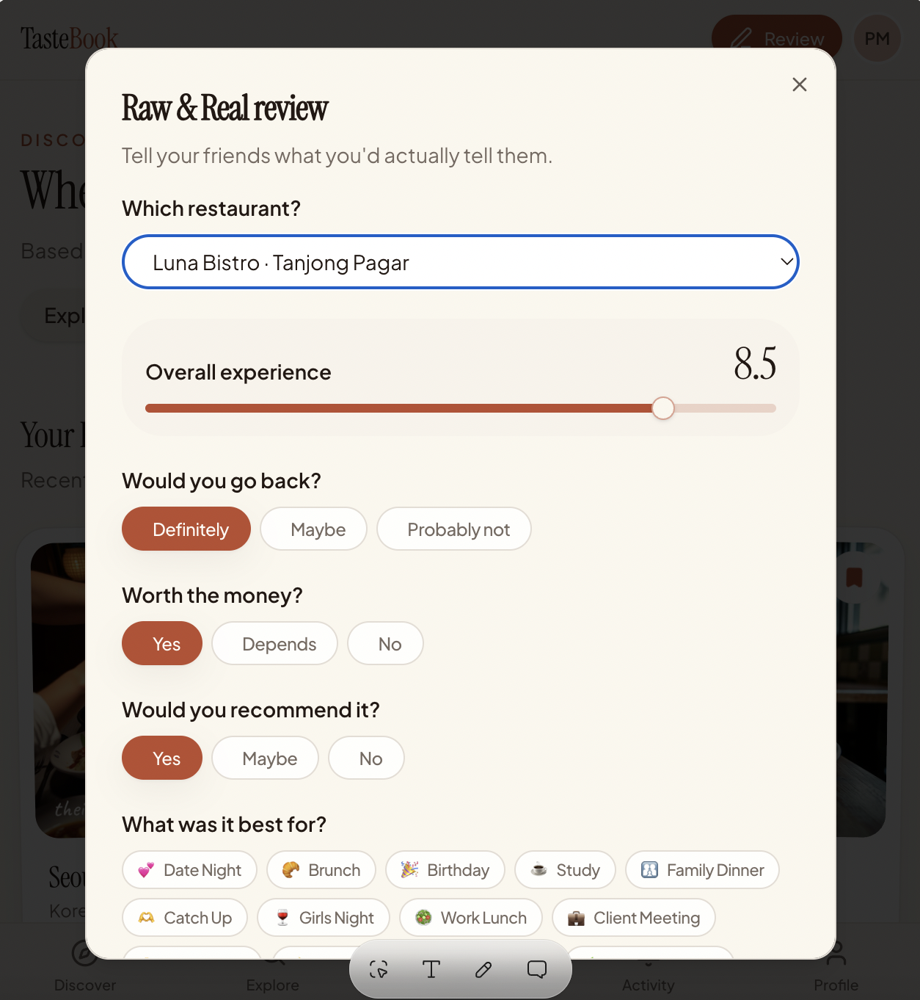

Recommendations get lost.
People discover restaurants through friends and social media, but struggle to retrieve those recommendations when they actually need them.
PRODUCT CASE STUDY · 2026
An independent product case study exploring how trusted recommendations, social context and better categorisation could make choosing where to eat easier.
Traditional review platforms can be overwhelming. Hundreds of anonymous ratings often provide little context around who the restaurant is actually suited for.
Reviews can also be influenced by incentives, while a single average score says little about occasion, atmosphere, price expectations or who you are dining with.
I started with four assumptions about how people currently discover, remember, evaluate and share restaurant recommendations. These became the basis for my initial user interviews.
People discover restaurants through friends and social media, but struggle to retrieve those recommendations when they actually need them.
Choosing somewhere for a birthday, date or family dinner involves different criteria from choosing somewhere for a casual meal.
People naturally recommend restaurants to friends, but may not want to actively maintain lists or write detailed reviews.
A recommendation from someone you know may carry different weight from an anonymous rating, but the way that recommendation is presented also matters.
I used semi-structured interviews to explore behaviour rather than asking users directly whether they would use the product. Questions focused on recent restaurant decisions, existing saving habits and how recommendations are shared.
DISCOVERY
I asked participants to walk through how they normally decide where to eat and which sources they naturally turn to first.
REDISCOVERY
I explored how restaurants are stored across social media, notes and maps, and whether those systems still work when users later need a recommendation.
CONTEXT
Participants were asked to recall a restaurant decision for a specific occasion and explain which factors influenced their final choice.
CONTRIBUTION
I explored how recommendations are currently shared and whether people would actively contribute restaurant recommendations inside a dedicated product.
Early conversations highlighted several recurring tensions in how people discover, save and choose restaurants. These signals shaped the initial product direction and the assumptions to test further.
People can accumulate large collections of saved restaurants across social media, maps and other platforms, but those recommendations are not always easy to retrieve when deciding where to eat.
The opportunity may be less about helping users find more restaurants and more about resurfacing the right recommendation when it becomes relevant.
A restaurant that looks appealing when it is first discovered may not fit the user's needs later because of factors such as location, price, occasion or who they are dining with.
Recommendations could become more useful when they are organised and resurfaced according to the user's immediate context.
Restaurant decisions are rarely based on cuisine or ratings alone. For more specific occasions, factors such as atmosphere, formality, menu suitability, price and location become more important.
Discovery could move beyond generic ratings by helping users understand what kind of experience a restaurant is actually suited for.
Restaurant recommendations are often exchanged naturally through messages and conversations. Creating detailed reviews or maintaining curated lists, however, requires significantly more effort.
A social discovery product should make contributing lightweight, capturing useful recommendations without requiring users to behave like reviewers or creators.
The early research shifted the concept away from simply creating another restaurant review platform. The product instead focuses on making existing recommendations easier to organise, understand and rediscover.
Surface recommendations from people users already know and trust.
Add information about occasion, vibe, location and other factors that influence restaurant choice.
Help users narrow their options without comparing hundreds of anonymous ratings.
I translated the initial product direction into a prototype focused on making restaurant discovery more contextual, social and easy to navigate.

A personalised starting point for discovering restaurants through relevant recommendations and social context.

Restaurant information goes beyond a single rating by surfacing context that helps users understand whether a place fits their needs.

A lightweight way to capture why someone enjoyed a restaurant without requiring them to write a lengthy traditional review.
LOOK FOR
Observe which pieces of restaurant information users notice and use first when comparing options.
TEST
Compare decisions made with anonymous reviews against decisions where recommendations from friends are visible.
MEASURE
Evaluate whether users can confidently reach a restaurant decision faster with contextual recommendations.
The current prototype is a starting point rather than a finished product. The next iteration would be driven by additional user research and usability testing.
Test which information genuinely helps users decide and remove anything that creates unnecessary noise.
Explore whether seeing who recommended a restaurant earlier in the discovery flow changes perceived trust and relevance.
Use additional interviews to understand the language people naturally use when describing where they want to eat.
Experiment with lightweight prompts, tags and quick reactions so useful recommendations can be captured without requiring users to write full reviews.